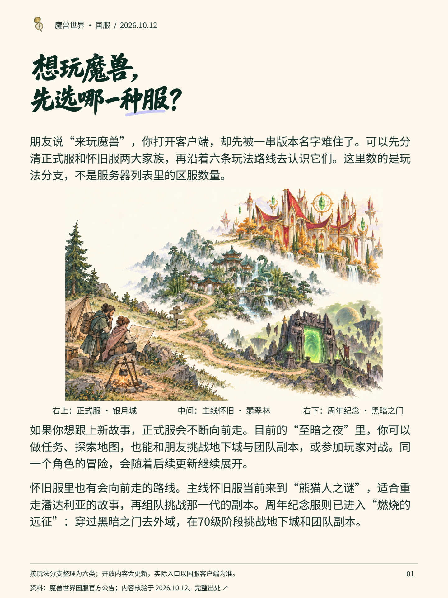
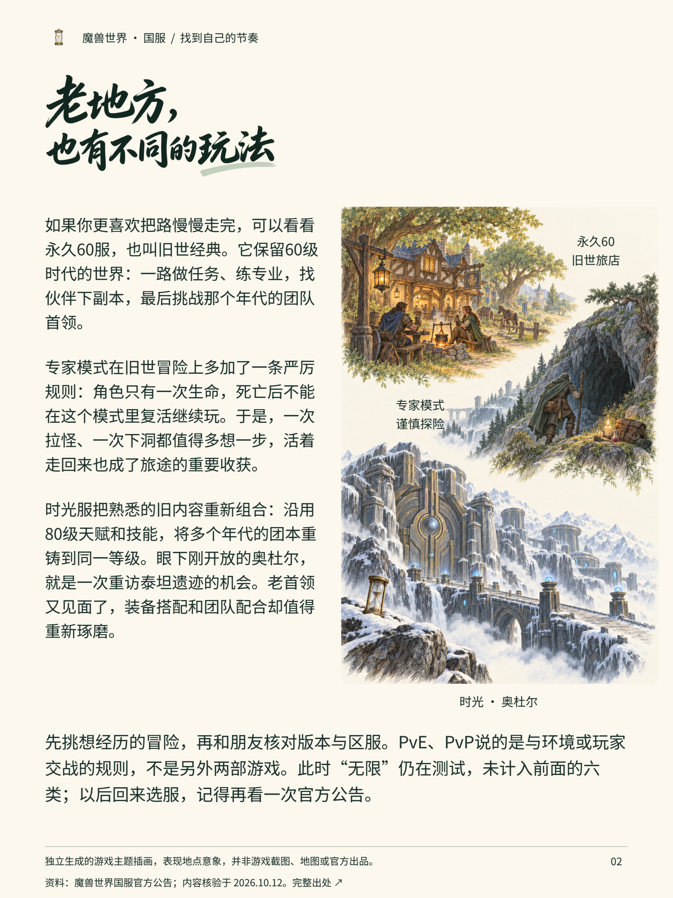

魔兽世界：先选一种冒险
同一份两页案例的文字阅读版，适合手机与辅助阅读工具。插画细节可展开每页成稿查看。
想玩魔兽，
先选哪一种服？
朋友说“来玩魔兽”，你打开客户端，却先被一串版本名字难住了。可以先分清正式服和怀旧服两大家族，再沿着六条玩法路线去认识它们。这里数的是玩法分支，不是服务器列表里的区服数量。
如果你想跟上新故事，正式服会不断向前走。目前的“至暗之夜”里，你可以做任务、探索地图，也能和朋友挑战地下城与团队副本，或参加玩家对战。同一个角色的冒险，会随着后续更新继续展开。
怀旧服里也有会向前走的路线。主线怀旧服当前来到“熊猫人之谜”，适合重走潘达利亚的故事，再组队挑战那一代的副本。周年纪念服则已进入“燃烧的远征”：穿过黑暗之门去外域，在70级阶段挑战地下城和团队副本。
画面索引：右上：正式服 · 银月城；中间：主线怀旧 · 翡翠林；右下：周年纪念 · 黑暗之门。
查看第1页图文成稿

本页内容已在上方以可选择文字完整呈现。按玩法分支整理为六类；开放内容会更新，实际入口以国服客户端为准。老地方，
也有不同的玩法
如果你更喜欢把路慢慢走完，可以看看永久60服，也叫旧世经典。它保留60级时代的世界：一路做任务、练专业，找伙伴下副本，最后挑战那个年代的团队首领。
专家模式在旧世冒险上多加了一条严厉规则：角色只有一次生命，死亡后不能在这个模式里复活继续玩。于是，一次拉怪、一次下洞都值得多想一步，活着走回来也成了旅途的重要收获。
时光服把熟悉的旧内容重新组合：沿用80级天赋和技能，将多个年代的团本重铸到同一等级。眼下刚开放的奥杜尔，就是一次重访泰坦遗迹的机会。老首领又见面了，装备搭配和团队配合却值得重新琢磨。
先挑想经历的冒险，再和朋友核对版本与区服。PvE、PvP说的是与环境或玩家交战的规则，不是另外两部游戏。此时“无限”仍在测试，未计入前面的六类；以后回来选服，记得再看一次官方公告。
画面索引：永久60
旧世旅店；专家模式
谨慎探险；时光 · 奥杜尔。
查看第2页图文成稿

本页内容已在上方以可选择文字完整呈现。独立生成的游戏主题插画，表现地点意象，并非游戏截图、地图或官方出品。